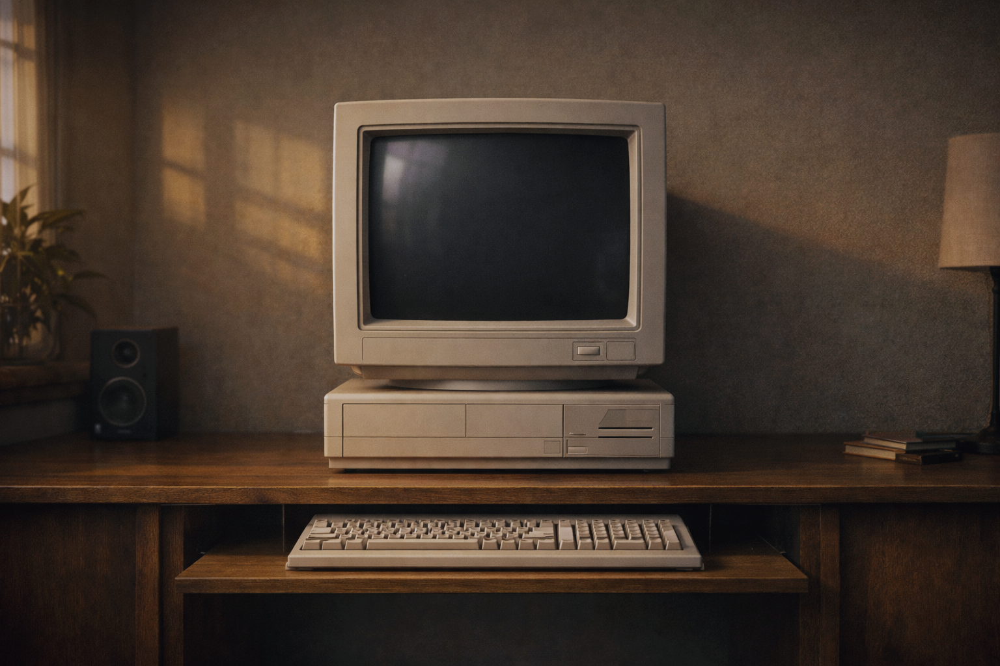

Broadcast Mode
Click once to unlock browser audio. After that, the monitor will stay live and switch every 30 seconds, preferring a newly mined block and otherwise falling back to a random historical block until you hit Stop audio.
Waiting for the generator to finish loading.